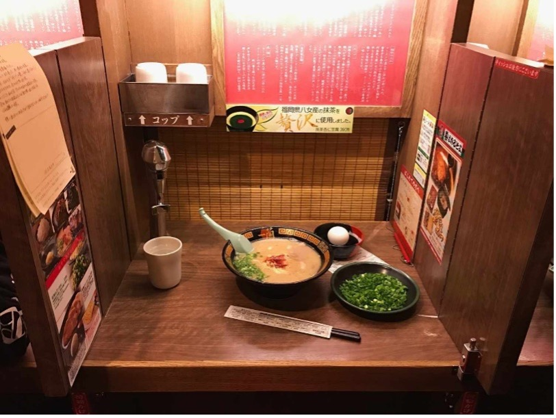
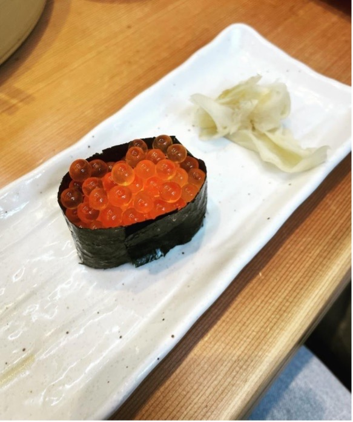
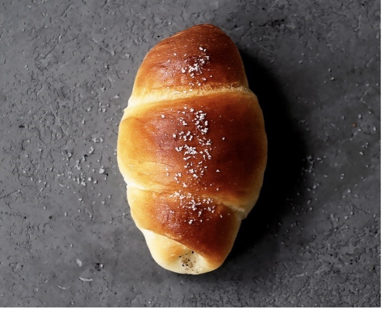

Comendo em Tóquio
Como a maioria deve saber, e com toda a minha modéstia reforço que em Tóquio eu sou uma local e que esse é um dos meus maiores motivos de orgulho. Morei na cidade por 3 anos, de 2018 a 2021, flanei muito pelos bairros mais legais e considero o Japão a minha segunda casa. Lá tenho uma boa parte de meus amigos e a cultura que moldou um pouco do que sou hoje (estranha :P).
Mês passado fui pra lá de férias, junto com meu namorado que visitava o país -e a Ásia- pela primeira vez. Exciting! E foi mesmo, incrível rever pessoas e lugares Tão especiais que tenho dentro do meu coração além de poder apresentá-los para Dani.
Depois de desfazer as malas, estendo aqui algumas dicas pra quem planeja visitar Tóquio em breve (Isa <3) ou deixo como arquivo para aqueles que planejam a viagem em um futuro mais longínquo. Pensei em começar com dicas sobre o que não deixar de comer na cidade, e separei para esse post os top 3 do meu ranking "não pode deixar de provar" e descrevo melhor o porquê abaixo.
1 - ICHIRAN Ramen
Melhor tonkotsu ramen -aliás melhor ramen- do universo. Existem várias unidades espalhadas por Tóquio e a fila anda mais rápido do que você imagina: vale a pena esperar! Você consegue customizar a quantidade de alho, cebolinha, pimenta e escolher o quão espesso quer seu caldo (existe formulário em inglês também, fiquem tranquilos). Fun fact: você pode, e recomendo comer em cabines como a da foto abaixo, pra ter uma experiência intensa, só você e seu ramen, sem ninguém pra atrapalhar.
2 - Nihonkai Meguro
Meguro é o meu bairro querido, onde ficava a minha casinha. Nihonkai é uma rede de restaurantes de sushi espalhados por Tóquio sendo que a qualidade varia de acordo com cada unidade. A de Meguro, fica em frente ao prédio onde morava, e tem qualidade garantida por **moi**, frequentadora assídua. Os peixes e frutos do mar são bastante frescos e variados, o ambiente descontraído, e um excelente custo-benefício principalmente para o lunch set durante os dias de semana, quando você come muito bem por uma valor em torno de 1,500-2,000 yen por pessoa.
Nota: recomendo muito o ikurá deles (sushi de ovas de salmão como o da foto abaixo). Aqui no Brasil, é muito difícil de achar -desse tamanho, com esse frescor nunca vi- e se você acha, provavelmente deve custar o olho da cara. Nihonkai eu te amo!!!
3 - TRUFFLE Bakeryo
Pra um café da manhã ou snack, recomendo a padaria com a temática de trufa que possui algumas unidades espalhadas por Tóquio. Sei que existe uma em Hiroo e também uma na estação JR de Shimbashi (a da embalagem da foto). Nessa padaria existem os folhados comuns tipo croissant, pain au chocolat, muffins, etc. que NÃO são trufados. Os itens com trufas negras e azeite trufado estão normalmente perto do caixa e eu, particularmente, recomendo muito esse pãozinho aqui da foto abaixo: olhando você pode não dar nada, mas uma vez que põe na boca o bendito entrega TUDO. Perfeito! (tão bom que é limitado, máximo de 6 unidades por cliente)
BONUS:
• Na combini (lojas mil de conveniência espalhadas pelo Japão) não deixe de comer muitos oniguiris, são deliciosos e tem o design mais perfeito de embalagem que mantem a alga crocante; • Recomendo também Pocky para as viagens de trem bala (é divertido de compartilhar); • O Tonki Meguroé o melhor tonkatsu que já provei, vale a visita; • Pra quem busca omakase de sushi, uma boa opção é o Rinda Sushi também em Meguro. Tem que reservar e custa por volta de 15,000 yen por pessoa (pelo menos na última vez que fui em 2020); • Eu amo muito soba, e um dos melhores em Tóquio é o Tokiwa em Mita (na frente da Embaixada Italiana). Eles tem um lunch setto bem lindo e acessível (custava 1,200 yen em 2020). Recomendo muito; • Muito udon bom no Japão, além dos restaurantes mais caseiros (com certeza vocês acharão vários em Quioto), recomento a rede Hanamaru Udon -logo da florzinha laranja- em Tóquio para um lanche rápido, barato e delicioso; • Se quiser um jantar especial e caro, recomendo o Kikunoi Akasaka (por volta de 30,000yen), mas muito chique e único. Tem que fazer reserva; • Pizza muito boa você encontrar no Seirinkan em Nakameguro; e no Savoy em Azabujuban. Ambos os bairros muito queridos e trendy de Tóquio; • Curry indiano no Japão é bom demais!! Qualquer restaurante indiano com uma foto de naan bread serve. Recomendo a experiência. O Moti em Roppongi é uma sugestão.